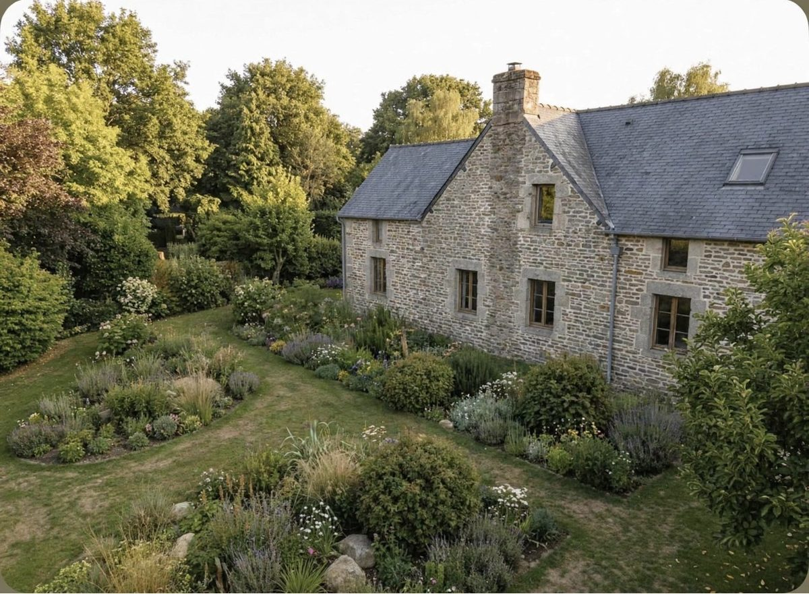
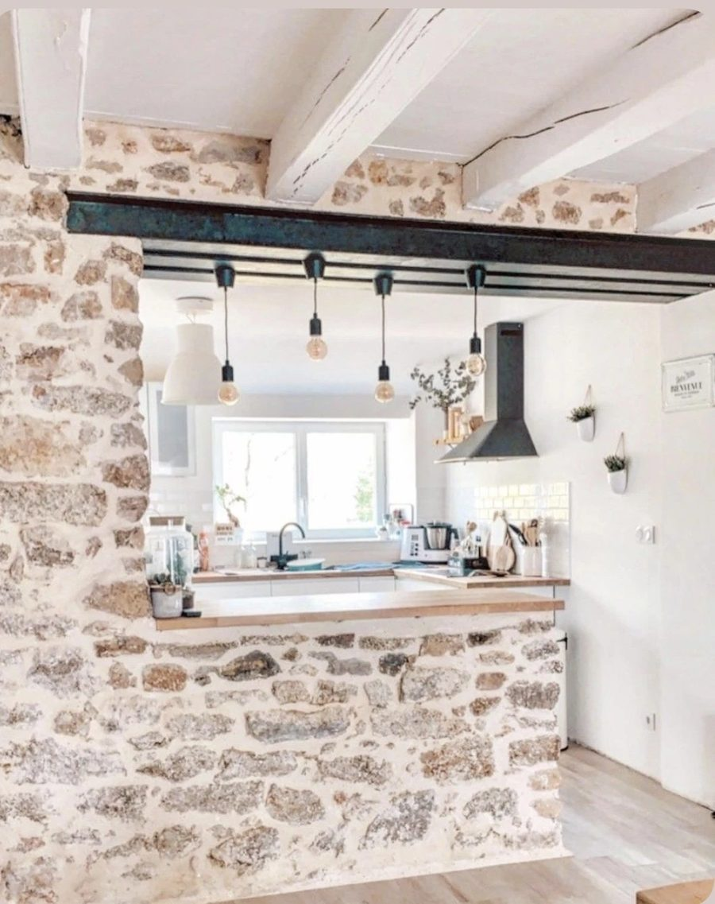

Nettoyage et préparation
Nettoyage, piquage des enduits dégradés, support remis à neuf.
Demander un devis
Fissures, enduit qui se décolle, façade salie par le temps ou les embruns : nous rénovons votre façade, du support à la finition.
Sur les maisons récentes comme sur le bâti ancien.
Nettoyage, piquage des enduits dégradés, support remis à neuf.
Demander un devisFissures ouvertes et reprises avant l'enduit.
Demander un devisFinition grattée, talochée ou écrasée, teinte au choix.
Demander un devisPour les murs anciens en pierre : la maçonnerie respire.
Demander un devisJoints dégradés repris au mortier de chaux.
Demander un devisL'aspect de la pierre sur une façade enduite.
En savoir plusRénovation complète de maisons, d'appartements et de granges : gros œuvre, second œuvre, isolation, électricité, plomberie, cuisines et salles de bains. Un seul interlocuteur du premier rendez-vous à la remise des clés.
Demander un devisFines ou plus marquées, elles laissent entrer l'eau.
Il sonne creux ou tombe par plaques.
Taches, auréoles, peinture qui cloque.
Façade noircie ou verdie avec le temps.
Sur la pierre, le mortier s'effrite.
Sel et vent usent les façades plus vite.
Enduit de façade, dans un large choix de teintes.
Enduit à la chaux ou rejointoiement, pour laisser respirer le mur.
Mortiers adaptés au vent et aux embruns.
Habillage en enduit imitation pierre.
Nous examinons le support, les fissures et l'humidité lors de la visite.
Abords protégés, nettoyage, piquage et reprise des fissures.
Enduit adapté au mur, encadrements et appuis, nettoyage.



« Très satisfaite du travail réalisé sur mes deux chantiers de ravalement de façades. Ces derniers ont été menés de main de maître par le chef d'équipe. »
« Nous sommes satisfaits du travail de maçonnerie effectué. De plus, Corentin Douillard est très sympathique. »
« Un excellent conseil, des délais très courts respectés, pour une réalisation et une finition impeccables, avec une finition de chantier parfaite. »
« J'ai fait appel à cette entreprise de rénovation-construction pour effectuer un agrandissement, je recommande vivement. »
Témoignages publiés sur larenovationdevosreves.fr.
Pas pour un ravalement à l'identique, sauf en secteur protégé ou si la commune l'impose. Un changement de teinte demande une déclaration préalable.
La chaux pour les murs anciens en pierre, qui doivent respirer ; l'enduit hydraulique pour le parpaing, la brique ou le béton.
Les fissures fines se traitent pendant le ravalement. Une fissure large ou qui évolue est examinée de près lors du diagnostic.
Selon la surface, l'état de la façade, la finition et l'échafaudage. Visite et devis détaillé gratuits.
Oui, tout se fait depuis l'extérieur ; menuiseries et abords sont protégés.
Décrivez votre façade, nous vous rappelons pour convenir d'une visite et d'un diagnostic.